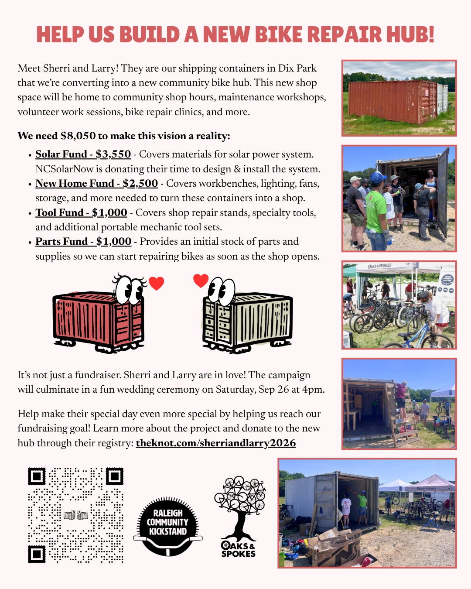

We're raising funds for a new community bike hub!

Meet Sherri and Larry! They are our shipping containers in Dix Park that we're converting into a new community bike hub to provide folks with the tools and knowledge to move freely and sustainably throughout their city. The goal of this new hub is to remove barriers to bike ownership and upkeep. A working bike provides independence, flexibility, and dignity. We believe everyone deserves mobility independence regardless of income, housing status, or prior mechanical experience.
Types of programming in this space will include:
- Community shop hours - open hours for you to come use our tools and stands to work on bikes or learn to work on bikes
- Bike repair clinics - opportunities for community members who can't afford a tune-up to seek help maintaining their bikes
- Volunteer work sessions - events to refurbish donated bikes to give to folks without access to reliable transportation
- Maintenance workshops - formal workshops to learn bike repair
- And much more!
We need your help to make this happen! We are looking to raise at least $8,050 to transform Sherri and Larry into a working bike shop. Here's how the funds will be used:
- Solar Fund - $3,550 - Covers the materials for a solar power system. NCSolarNow is generously donating their time and expertise to design and install the project.
- New Home Fund - $2,500 - Covers the workbenches, storage, lighting, fans, and other infrastructure needed to turn these two containers into a functional bike shop.
- Tool Fund - $1,000 - Rounds out our existing tool collection with shop repair stands, specialty tools, and additional portable mechanic tool sets.
- Parts Fund - $1,000 - Provides an initial stock of parts and supplies so we can start repairing bikes as soon as the shop opens.
It's not just a fundraiser. Sherri and Larry are in love! The campaign will culminate in a fun wedding ceremony on Saturday, Sep 26 at 4pm.
Help make their special day even more special by helping us reach our fundraising goal! Learn more about the project and donate to the new hub through their registry: theknot.com/sherriandlarry2026
Watch a video of their story here:
Here is a flyer you can share:
